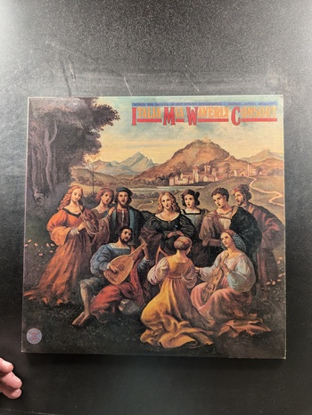Italia Mia
Waverly Consort
CBS Masterworks
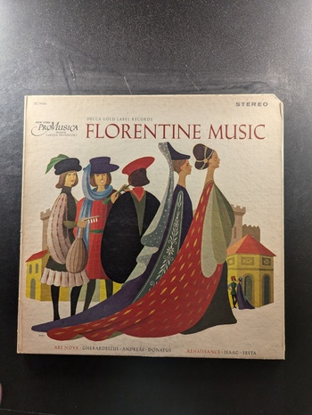Florentine Music
New York Pro Musica
Decca Gold Label Records DL 79428
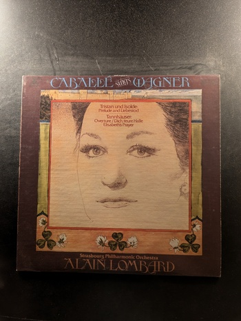Caballé Sings Wagner
Alain Lombard
RCA Red Seal ARL1-3432
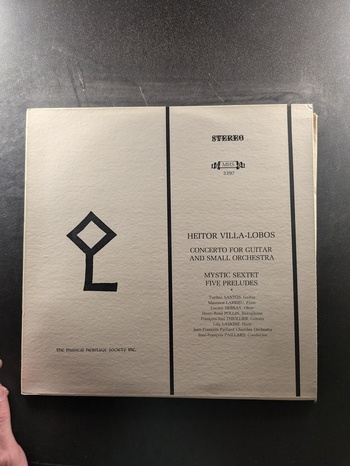Concerto for Guitar and Small Orchestra / Mystic Sextet / Five Preludes
Heitor Villa-Lobos
The Musical Heritage Society Inc. MHS 3397
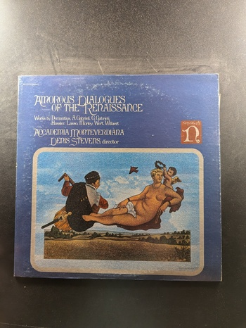Amorous Dialogues of the Renaissance
Accademia Monteverdiana
Nonesuch H-71212
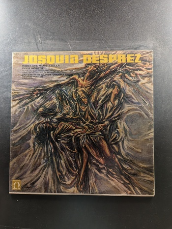Missa Ave Maris Stella
Josquin Desprez
Nonesuch H-71118
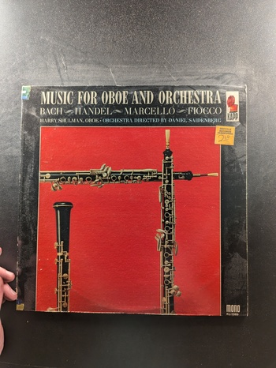Music for Oboe and Orchestra
Harry Shulman, Orchestra directed by Daniel Saidenberg
Kapp Records KL-1389
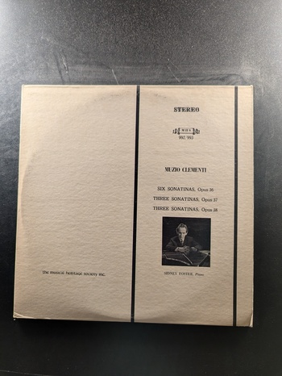Six Sonatinas, Opus 36; Three Sonatinas, Opus 37; Three Sonatinas, Opus 38
Muzio Clementi
Musical Heritage Society MHS 992/993
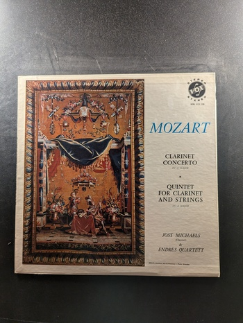Clarinet Concerto / Quintet for Clarinet and Strings
Mozart
Sereno SPLM 511.110
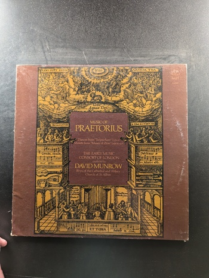Music of Praetorius
David Munrow, The Early Music Consort of London
Angel S-36908
Entre Dos Aguas
Paco de Lucía
Philips
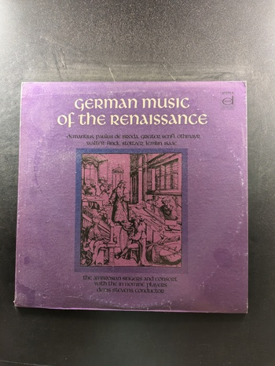German Music of the Renaissance
The Ambrosian Singers and Consort with The In Nomine Players
Vox Turnabout TV 37270-4
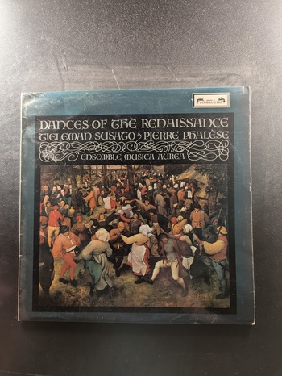Dances of the Renaissance
Ensemble Musica Aurea
L'Oiseau-Lyre
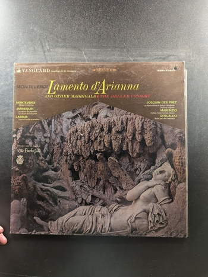Lamento d'Arianna and Other Madrigals
The Deller Consort
Vanguard BGS-70671
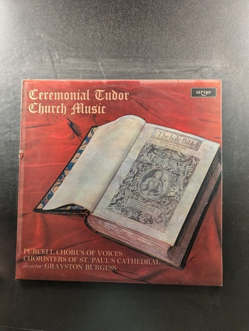Ceremonial Tudor Church Music
Purcell Chorus of Voices, Choristers of St. Paul's Cathedral, director Grayston Burgess
Argo
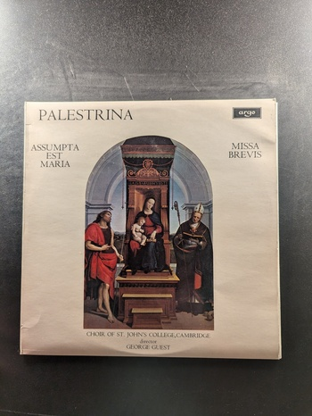Assumpta Est Maria / Missa Brevis
Palestrina
Argo
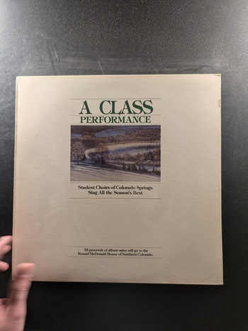A Class Performance
Student Choirs of Colorado Springs
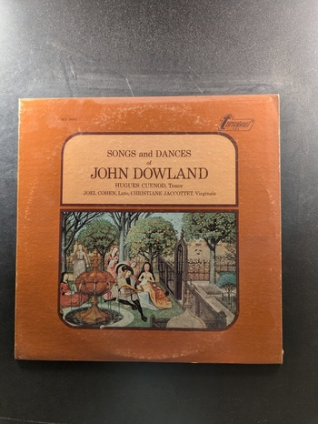Songs and Dances of John Dowland
John Dowland
Turnabout TV 34510
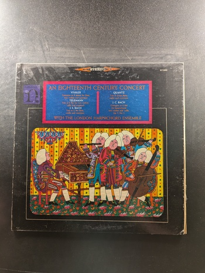An Eighteenth Century Concert
The London Harpsichord Ensemble
Nonesuch H-71005
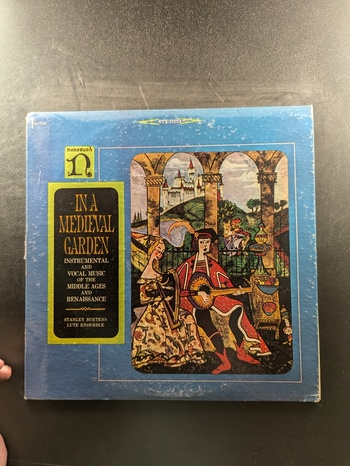In a Medieval Garden
Stanley Buetens Lute Ensemble
Nonesuch H-71138
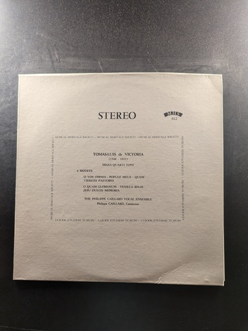Missa Quarti Toni
Tomas Luis de Victoria
Musical Heritage Society MHS 612
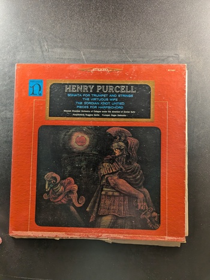Sonata for Trumpet and Strings / The Virtuous Wife / The Gordian Knot Untied / Pieces for Harpsichord
Henry Purcell
Nonesuch H-71167
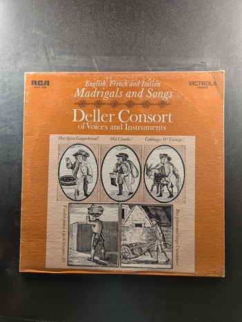Madrigals and Songs
Deller Consort
RCA Victrola VICS-1428
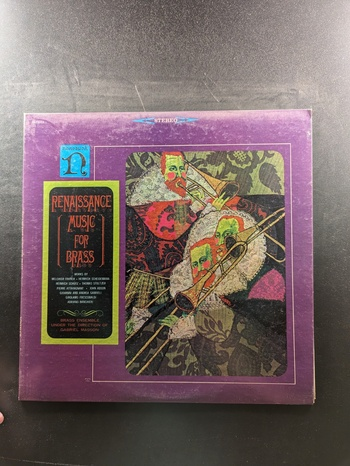Renaissance Music for Brass
Brass Ensemble under the direction of Gabriel Masson
Nonesuch H-71011
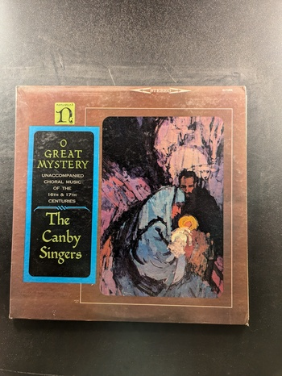O Great Mystery
The Canby Singers
Nonesuch H-71028
{kind=link}
{kind=link}
{kind=link}
{kind=link}
{kind=link}
{kind=link}
{kind=link}
{kind=link}
{kind=link}
{kind=link}
{kind=link}
{kind=link}
{kind=link}
{kind=link}
{kind=link}
{kind=link}
{kind=link}
{kind=link}
{kind=link}
{kind=link}
{kind=link}
{kind=link}
{kind=link}
{kind=link}
{kind=link}